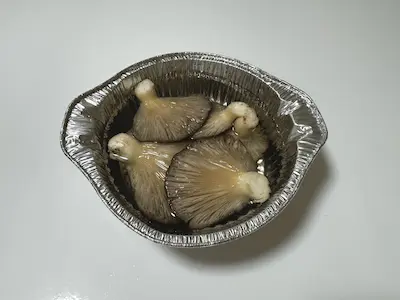
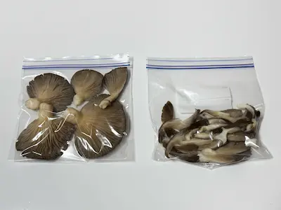

1
ヒラタケ
| 分類 | ヒラタケ科／ヒラタケ属 |
|---|---|
| 時期 | 晩秋 〜 春 |
| 食用 | 食 |
特徴
傘は半円形から扇形。表面の色は、初めはほぼ黒→灰色→灰褐色→白色に変化する。
切り株などに重なり合って発生する。
西欧ではオイスターマッシュルームの名で好まれている。
優秀な食菌で、広く人工栽培され「しめじ」の名で売られている。
野生ヒラタケの下処理・保存

塩水にしばらくつけ、隠れている虫を追い出します。
2
水気を取る

ペーパータオルで優しく水分を拭き取ります。
3
切り分け

手で食べやすい大きさに割きます。
4
冷凍保存
冷凍用保存袋に入れ、空気を抜いて密閉し冷凍保存します。
※キノコは冷凍することで旨味がアップします！
きのこレシピ
ひらたけのバター醤油パスタ
材料（1人分）
- パスタ 100g
- 冷凍ひらたけ 120〜150g
- バター 10g
- 醤油 小さじ1と1/2
- 塩コショウ 少々
- 小口ねぎ （あれば）
作り方
- パスタを袋の表示通りにゆでる。
- フライパンにバターを熱し、凍ったままのひらたけを炒める。
- 醤油を回し入れ、ゆで上がったパスタを加えて塩コショウで味を調える。
- 器に盛り小口ねぎを散らしたら、完成！